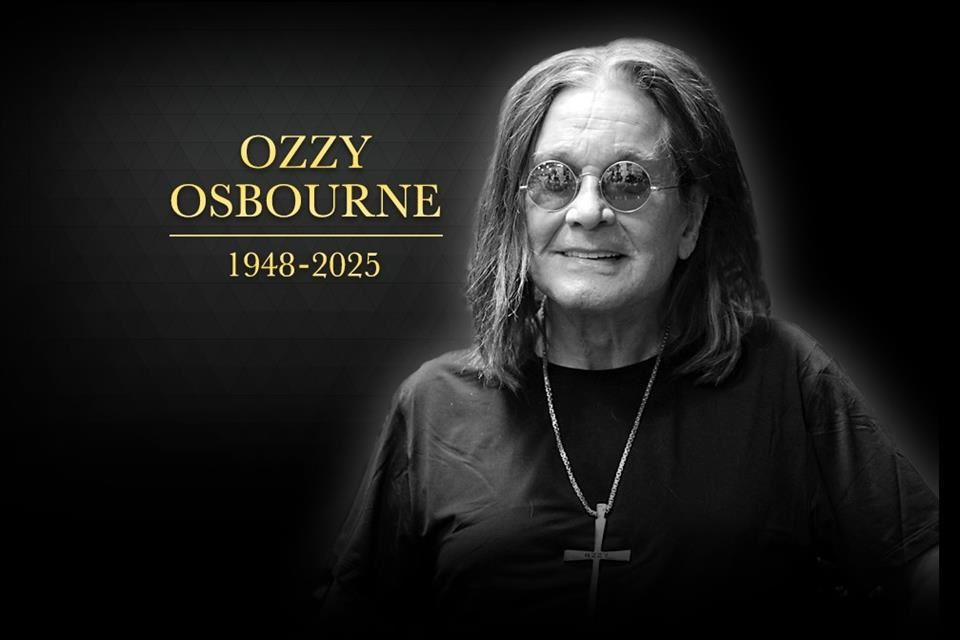
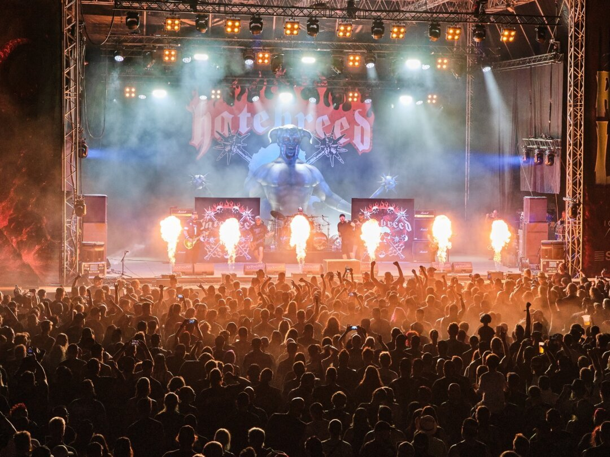

El mundo del metal está de luto. Ozzy Osbourne, una de las figuras más importantes de la historia del heavy metal, falleció el 22 de julio de 2025 a los 76 años.
Nacido el 3 de diciembre de 1948 en Birmingham, Inglaterra, Ozzy revolucionó el género junto a Black Sabbath y consolidó su carrera solista con clásicos como “Crazy Train”, “Mr. Crowley”, “Paranoid” y “No More Tears”.

En su tercera edición, el festival Rock The Lakes ofrece un cartel internacional de alto nivel a orillas del lago de Neuchâtel.
Del 16 al 18 de agosto de 2024, el nuevo recinto del festival en Cudrefin, se convertirá en el lugar de encuentro suizo para los fans del rock y el metal. Este evento ofrece a los concurrentes la posibilidad de disfrutar de un camping de primer nivel con un entorno magnífico.
